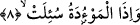

birliği sağlanmış olmaktadır.
Bu âyette ma’rifet-i zâtiyye denizlerine, hükm-i sıfatiyye ve ulum-i esmâiyye
denizlerine işâret vardır. Bu denizler tecelli-i vahdâni sâyesinde birleştiklerinde bir tek
deniz olacaklardır. Bu deniz, bütün mertebeleri içinde bulunduran zat denizi olacaktır.
Ayrıca bu âyette vücûd itibarlarından onun zâhir veya bâtın, gayb ve şehâdet, dünya ve
âhiret küllî işlerinden hâsıl olan denizlere işâret vardır. Çünkü bu denizler bir araya
getirilip birleştirilerek bahru’l-vücud hâline gelirler. Böylece sâhili, dibi olmayan
dopdolu bir deniz olur. Yine bu âyette anâsır denizlerine ve bunların birbirine karışıp
her bir parçanın aslı ile birleşerek bir tek deniz olacağına işâret vardır.
7. Ruhlar (bedenlerle) birleştirildiğinde,
Zâhir olan; buradaki “ruhlar” kelimesiyle kasdedilenin, insanların ruhları ve nefisleri
olduğudur. Ancak bazı tefsir kitaplarında yer aldığı üzere âyetin cinleri de içine alma
ihtimali vardır.
“Birleştirilme” anlamına âyette “zuvvicet” fiili geçmektedir. Bu fiilin kökü olan
“tezvîc” kelimesi, “herhangi bir şeyi diğer şeye eş etmek” anlamına gelir. Dolayısıyla
“tezvic”, bir şeyin diğer şeyle yanyana gelmesini gerektirir. Buna göre âyette şöyle
denilmektedir: Ruhlar geriye iâde edilmek sûretiyle cesedleriyle birleştirildiğinde.
Yahut her nefis kendi benzeriyle bir araya geldiğinde hayır veya şer kendi tabakasında
bulunan ruhla bir araya geldiğinde... Böylece sâlih olan kimse sâlih olanla, günahkar
olan fâcirler fâcirlerle bir araya gelirler. Yahut da her nefis kendi kitabı veya ameli ile
bir araya getirildiğinde... Böylece azgın ruhlar kötü amelleriyle, mutmain ruhlar da
güzel amelleriyle bir araya getirilirler. Bir başka anlam da şudur: Mü’minlerin nefisleri
hurilerle, kâfirlerin nefisleri şeytanlarla bir araya getirildiğinde..
Bu âyet-i kerimede; emir aleminden eşbah heykelleri üzerine taşan ruhların kendi
mucibleri ve sebebleri ile biraraya geleceklerine işâretler vardır. Bu mucibler, ilâhi
esma ve sıfat ile bunların ilâhi sebebleridir.
8. Diri diri toprağa gömülen kıza
Âyetteki “el-mev’ûdetu” kelimesinin anlamı “diri diri toprağa gömülen kız” demektir.
Araplar fakir kalırız korkusuyla veya birisinin eline geçip de câriye olarak kullanılır ya
da bu kızlardan dolayı namusumuza bir leke gelir endişesiyle kız çocuklarını toprağa
gömerlerdi. Melekler Allah’ın kızlarıdır; şu halde bu kızları da Allah’a, onun katına